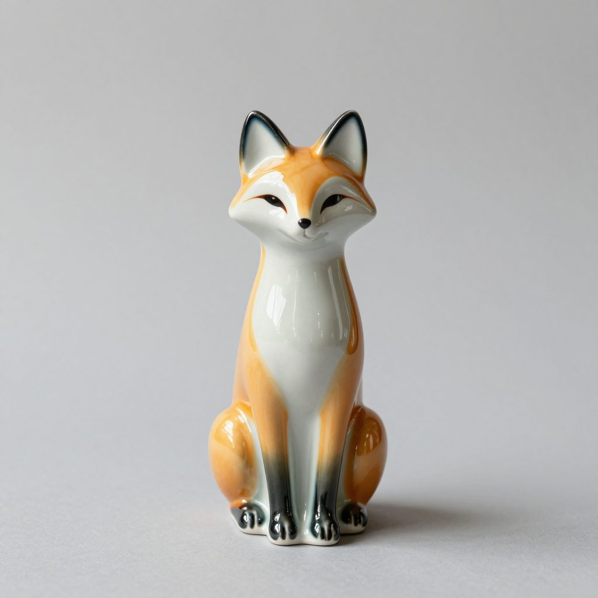

3D from a picture
Pixal3D TRELLIS.2 Image to Model (int8): the background cut away, the shape and colours built as voxels, meshed, decimated to 200,000 triangles and baked into 4096 px textures. Drag to turn. On these public pages the models are made small for the web (40,000 triangles, 1024 px textures, ~1 MB); the originals have 200,000 triangles and 4096 px textures.
A ceramic fox
TRELLIS.2, 620 s; 27 MB.


How it was made
- Models
- qwen_3_4b.safetensors, ae.safetensors, z_image_turbo_bf16.safetensors
- Size
- 1024×1024
- Sampling
- steps 8, cfg 1.0, sampler_name res_multistep, scheduler simple
- Seed
- 0
Product photo of a painted ceramic fox figurine sitting upright, full body, centered, plain light grey studio background, soft even light
The ComfyUI API graph — queue it on a running ComfyUI to make it again.
A half-timbered house
Pixal3D, 2308 s; 50 MB.
A handbag
TRELLIS.2, 3788 s. Plain white surfaces are hard for both; extra views of the object (*Mehrere Ansichten*) helped its side profile.